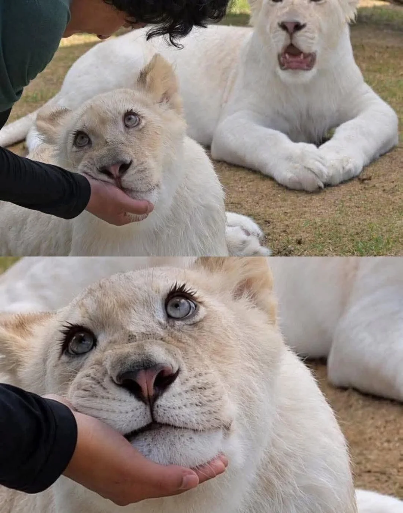
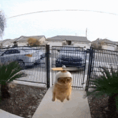

대구 동물원에 있는 이쁜 흰사자
댓글
루카루나 어렸을때부터 자라는거 인스타랑 유튜브에서 꾸준히 보여주는데 애들 눈빛이 너무 예쁨ㅋㅋㅋ
얘들 이제 400며칠됐나 ㅋㅋ 어제 갔을때 차타고 어디 이동하는거 봤는데 그래도 사자라고 코앞에서 보니까 대가리 존나 크더라 ㅋㅋ 성인남성 몸통만함
새집갔다네 더큰 사육장으로 옮겼나봄
헌집줫나봄?
ㅇㅇ ㅋㅋ 그런가보네 어제 차 타고 천천히 가는거 바로 옆에서 봤음 사진처럼 눈빛 진짜 무해하더라

저기 어딘가요?
대구 어딘가요?
대답좀
평양이래요
입장료 9900원 네이쵸파크(가끔 1+1 함)
심바 이 미친새끼
반응온다

쨍 그 랑
내 밥왔쪙?